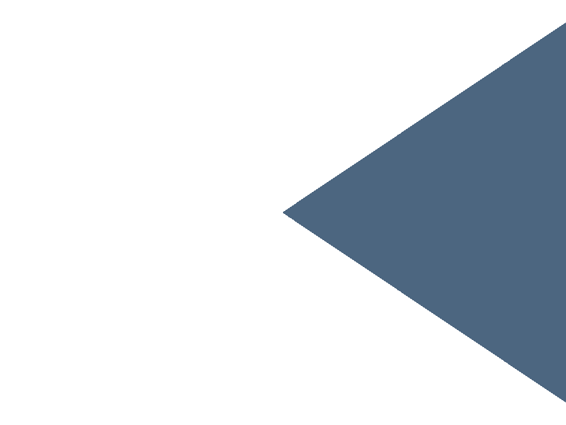
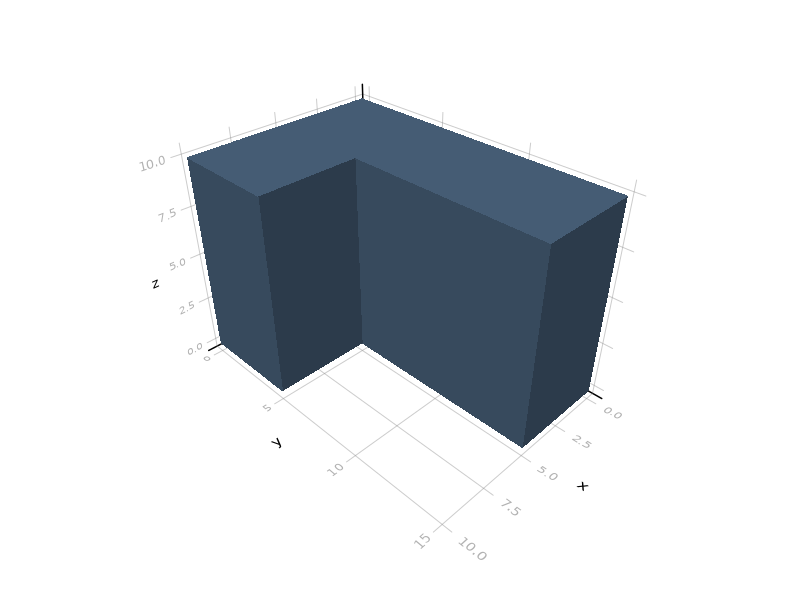
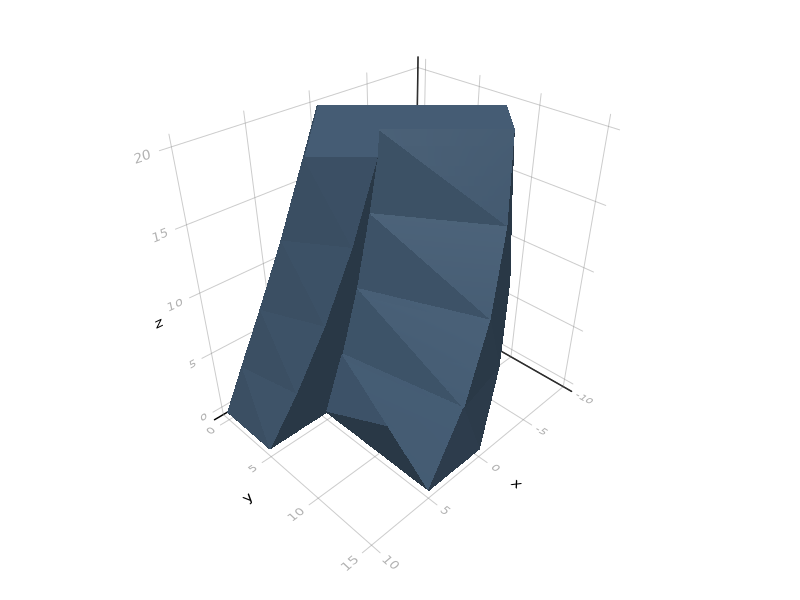
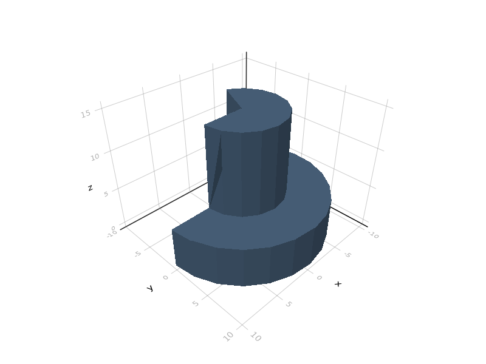
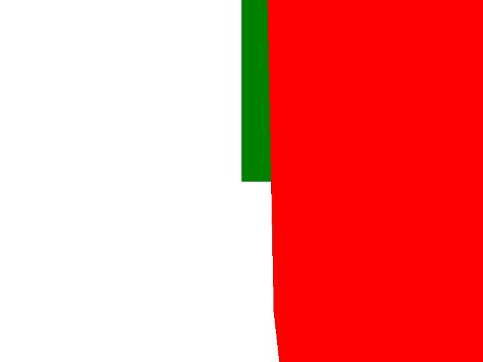
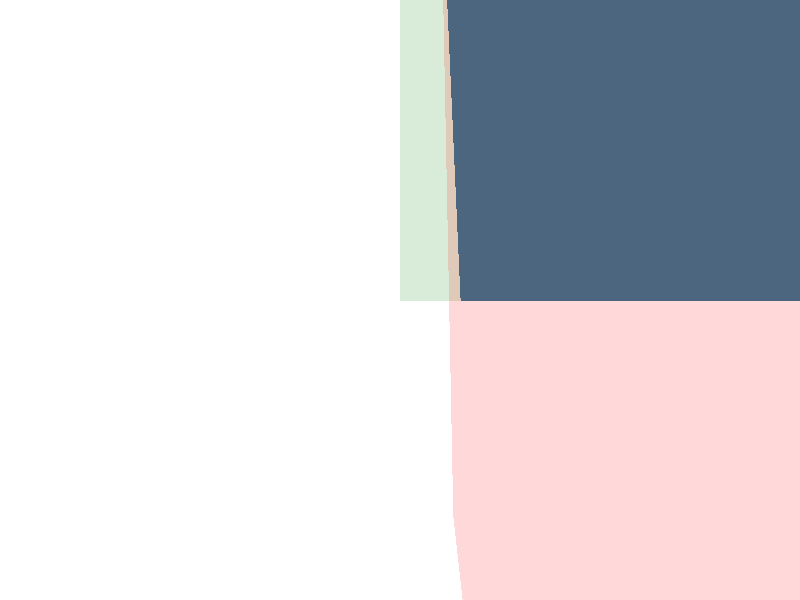

Transformations
All single-object transformations accept two possible syntaxes:
transform(parameters, solid1, solid2, ...)
transform(parameters) * solid1The second, multiplicative form allows easy chaining of transformations:
transform1(param1) * transform2(param2) * solidThis form may also be applied to several solids by either wrapping them in a union, or equivalently, by applying it to a Vector of such objects:
transform(parameters) * [ solid1, solid2, ... ]Affine transformations
ConstructiveGeometry.mult_matrix — Functionmult_matrix(a, [center=c], solid...)
mult_matrix(a, b, solid...)
mult_matrix(a, b) * solid
a * solid + b # preferred formRepresents the affine operation x -> a*x + b.
Extended help
The precise type of parameters a and b is not specified. Usually, a will be a matrix and b a vector, but this is left open on purpose; for instance, a can be a scalar (for a scaling). Any types so that a * Vector + b is defined will be accepted.
Conversion to a matrix will be done when meshing.
Chained affine transformations are composed before applying to the objects. This saves time: multiple (3 × n) matrix multiplications are replaced by (3 × 3) multiplications, followed by a single (3 × n).
julia> s = mult_matrix([1 0 0;0 1 0;0 .5 1])*cube(10);
Only invertible affine transformations are supported. Transformations with a negative determinant reverse the object (either reverse the polygon loops, or reverse the triangular faces of meshes) to preserve orientation.
For non-invertible transformations, see project.
Three-dimensional embeddings of two-dimensional objects
As an exception, it is allowed to apply a (2d -> 3d) transformation to any three-dimensional object. The result of such a transformation is still two-dimensional (and will accordingly be rendered as a polygon), but the information about the embedding will be used when computing convex hull or Minkowski sum with a three-dimensional object.
julia> s = hull([30,0,0]+[1 0 0;0 1 0;.5 0 0]*circle(20), [0,0,30]);
ConstructiveGeometry.translate — Functiontranslate(v, s...)
translate(v) * s
v + sTranslates solids s... by vector v.
ConstructiveGeometry.scale — Functionscale(a, s...; center=0)
scale(a; center=0) * s
a * sScales solids s by factor a. If center is given then this will be the invariant point.
a may also be a vector, in which case coordinates will be multiplied by the associated diagonal matrix.
julia> s = [1,1.5,2]*sphere(50);
ConstructiveGeometry.rotate — Functionrotate(θ, [center=center], [solid...])
rotate(θ, axis=axis, [center=center], [solid...])Rotation around the Z-axis (in trigonometric direction, i.e. counter-clockwise).
rotate((θ,φ,ψ), [center=center], [solid...])Rotation given by Euler angles (ZYX; same ordering as OpenSCAD).
Angles are in degrees by default. Angles in radians are supported through the use of Unitful.rad.
julia> s = rotate(30)*square(20);ConstructiveGeometry.reflect — Functionreflect(v, s...; center=0)
reflect(v; center=0) * sReflection with axis given by the hyperplane normal to v. If center is given, then the affine hyperplane through this point will be used.
ConstructiveGeometry.raise — Functionraise(z, s...)Equivalent to translate([0,0,z], s...).
ConstructiveGeometry.lower — Functionlower(z, s...)Equivalent to translate([0,0,-z], s...).
Overloaded operators
The following operators are overloaded.
matrix * solidis a linear transformation.vector * solidis a multiplication by a diagonal matrix.vector + solidis a translation.real * solidis a scaling.complex * 2dshapeis a similitude.color * solidis acoloroperation.color % solidis ahighlightoperation.
Two-dimensional drawing
ConstructiveGeometry.offset — Functionoffset(r, solid...; kwargs...)
offset(r; kwargs...) * solidOffsets by given radius. Positive radius is outside the shape, negative radius is inside.
Parameters for 2d shapes:
ends=:round|:square|:butt|:loop
join=:round|:miter|:square
miter_limit=2.0Parameter for 3d solids:
maxgrid = 32 # upper bound on the number of cubes used in one directionOffset of a volume is a costly operation; it is realized using a marching cubes algorithm on a grid defined by maxgrid. Thus, its complexity is cubic in the parameter maxgrid.
The grid size used for offsetting is derived from the atol and rtol parameters, and upper bounded by the optional maxgrid parameter (if this is different from zero).
julia> s1 = offset(10)*[square(100,50), square(50,100)];
julia> s2 = offset(3)*cube(30);

ConstructiveGeometry.opening — Functionopening(r, shape...; kwargs...)Morphological opening: offset(-r) followed by offset(r). Removes small appendages and rounds convex corners.
julia> s = opening(10)*[square(100,50), square(50,100)];
ConstructiveGeometry.closing — Functionclosing(r, shape...; kwargs...)Morphological closing: offset(r) followed by offset(-r). Removes small holes and rounds concave corners.
julia> s = closing(10)*[square(100,50), square(50,100)];
Extrusion
Linear extrusion
ConstructiveGeometry.linear_extrude — Functionlinear_extrude(h, s...; twist, scale)
linear_extrude(h) * s...Linear extrusion to height h.
julia> s1 = linear_extrude(10)*[square(10,5), square(5,15)];
julia> s2 = linear_extrude(20, twist=45, scale=.8)*[square(10,5), square(5,15)]; 
ConstructiveGeometry.rotate_extrude — Functionrotate_extrude([angle = 360°], shape...; slide=0)
rotate_extrude([angle = 360°]; [slide=0]) * shapeSimilar to OpenSCAD's rotate_extrude primitive.
The slide parameter is a displacement along the z direction.
julia> s1 = rotate_extrude(245)*[square(10,5), square(5,15)];
julia> s2 = rotate_extrude(720, slide=30)*translate([10,0])*square(5); 
The cone function may also be used as an operator to build a cone out of an arbitrary shape:
julia> s = cone([1,2,3])*square(5);
Surface sweep
ConstructiveGeometry.sweep — Functionsweep(path, shape...)Extrudes the given shape by
- rotating perpendicular to the path (rotating the unit y-vector
to the direction z), and
- sweeping it along the
path, with the origin on the path.
FIXME: open-path extrusion is broken because ClipperLib currently does not support the etOpenSingle offset style.
A swept surface is similar to a (closed) path extrusion:
julia> s = sweep(square(50))*circle(5);
A surface may only be swept along a closed loop (or the union of several closed loops) for now; this is a limitation of the clipper library, which does not support single-path extrusion for now (and this is unlikely to change in the near future).
julia> f(t) =([ cospi(t) -sinpi(t) 0;sinpi(t) cospi(t) 0;0 0 1],[0 0 10*t]);
julia> s = sweep(f; nsteps=100,maxgrid=100)*cube(20);Decimation
These operations either reduce or increase the number of faces in a three-dimensional object.
ConstructiveGeometry.decimate — Functiondecimate(n, surface...)Decimates a 3d surface to at most n triangular faces.
ConstructiveGeometry.loop_subdivide — Functionloop_subdivide(n, shape...)Applies n iterations of loop subdivision to the solid. This does not preserve shape; instead, it tends to “round out” the solid.
julia> s = loop_subdivide(4)*cube(20);
Coloring objects
ConstructiveGeometry.color — Functioncolor(c::Colorant, s...)
color(c::AbstractString, s...)
color(c::AbstractString, α::Real, s...)
color(c) * s...Colors objects s... in the given color.
julia> green, red = parse.(ConstructiveGeometry.Colorant, ("green", "red"))
(RGB{N0f8}(0.0,0.502,0.0), RGB{N0f8}(1.0,0.0,0.0))
julia> s = union(green * cube(10), [10,0,0]+red*sphere(10));
ConstructiveGeometry.highlight — Functionhighlight(c::Colorant, s)
highlight(c::AbstractString, s)
(c::Colorant) % sMarks an object as highlighted. This means that the base object will be displayed (in the specified color) at the same time as all results of operations built from this object.
julia> s = intersect(green % cube(10), red % ([10,0,0]+sphere(10)));
Highlighted parts of objects are shown only when the object is represented as an image via the plot method (either interactively with GLMakie, or as an image with CairoMakie). For SVG and STL output, all highlighted parts are ignored.
Highlighted objects are preserved only by CSG operations and (invertible) affine transformations. For other transformations:
- convex hull and Minkowski sum are generally increasing transformations, and would cover highlighted parts anyway;
- projection, slicing and extrusion modify the dimension of object, making it impossible to preserve highlighted parts.
Modifying meshing parameters
ConstructiveGeometry.set_parameters — Functionset_parameters(;atol, rtol, symmetry) * solid...A transformation which passes down the specified parameter values to its child. Roughly similar to setting $fs and $fa in OpenSCAD.
The set_parameters transformation allows attaching arbitrary metadata. This is on purpose (although there currently exists no easy way for an user to recover these metadata while meshing an object).
The values for these parameters are explained in atol and rtol.